Sun Web Application Guidelines - Version 4.1
Sun Web Application Guidelines - Version 4.1
|
|
|
| [ Table of Contents | 0 Revision History | 1 Introduction | 2 Visual Design | 3 Windows and Pages | 4 Mastheads | 5 Top-Level Navigation | 6 Content Area | 7 Simple Elements | 8 Complex Elements | 9 Tables | 10 Topology | 11 Contextual Help | 12 Search | 13 Wizards | 14 Alerts and Messages | 15 Progress Indicators | 16 Alarms and Status Indicators | 17 Login Page | 18 Version Page | Appendices ] |
How To Use These Guidelines - An Introduction
7.2 Elements Used for Choosing Data, Performing Actions, and Navigating
7.2.1 Elements Used for Choosing One Value
7.2.1.3 Standard Drop-Down Menu
7.2.1.3.1 General Drop-Down Menu Behavior
7.2.2 Elements Used for Choosing One or More Values
7.2.2.2 Multiple Selection Scrolling List
7.2.3 Elements Used for Performing Actions and Navigating
This chapter addresses the design of simple user interface elements that are used in similar ways across applications.
When using the user interface elements described in this chapter and elsewhere in these guidelines, remember to use them with cultural considerations in mind. For example, applications must be able to format and display time, date, and calendar data according to local cultural conventions.
 To ensure that cultural considerations are addressed when using user interface elements,
follow the guidelines in Appendix H, Globalization Requirements.
To ensure that cultural considerations are addressed when using user interface elements,
follow the guidelines in Appendix H, Globalization Requirements.
For most elements, there is an enabled (normal state), a noneditable (read-only) state where the value is applicable but the user cannot change it, and a disabled (not applicable) state for when a value for that field does not apply to the current situation. For fields which do not show a data value, such as buttons and jump menus, the only applicable states are enabled and disabled. The possible appearances are documented for each type of field.
For more information on the placement of read-only fields within a page, see 6.8.1 Noneditable User Interface Elements.
 Generally, use buttons for actions and use hyperlinks for navigation.
Generally, use buttons for actions and use hyperlinks for navigation.
There are
three main action button styles:
The appearance of each button type will vary depending on the button's state and/or its use. The following table shows state appearance for Primary and Secondary buttons. See 7.1.4 Iconic Buttons for more information about iconic buttons.
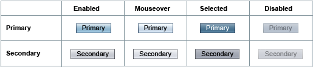
The primary button's unique appearance indicates that it is the most commonly used button within a page or panel. (A panel is a unit within the page which the user operates within and closes. See 9.5.3 Table Preferences for an example of a table panel). The primary button's uniqueness helps to guide users through a task by helping them find the button most likely to help them accomplish the task.
 Only the main button within a page or panel can use the primary button style. The only time a given page might contain more than one primary button is if the main button on the page is a primary button and the page contains a panel that includes a primary button.
Only the main button within a page or panel can use the primary button style. The only time a given page might contain more than one primary button is if the main button on the page is a primary button and the page contains a panel that includes a primary button.
 If the main button in the page or panel "group" consists of only one button, that button
is virtually always a primary button.
If the main button in the page or panel "group" consists of only one button, that button
is virtually always a primary button.
 All buttons associated with a particular field or section should be secondary buttons.
All buttons associated with a particular field or section should be secondary buttons.
 Use caution when making destructive actions, such as Delete, primary buttons.
However, if the user is mostly likely to click this button, and it is the main button on the page or panel, it can be the primary
button.
Use caution when making destructive actions, such as Delete, primary buttons.
However, if the user is mostly likely to click this button, and it is the main button on the page or panel, it can be the primary
button.
A disabled button is a button that users cannot use in the current context, but the button can be used if the context changes. The implication is that the user can enable the button by taking some action, such as selecting a row or an item in a list.
 Do not use a disabled button if it will never become enabled. Instead, just do not display the button.
Do not use a disabled button if it will never become enabled. Instead, just do not display the button.
For example, if security restricts access to a button, hide it instead of displaying it as disabled.
This guideline does not apply, however, to a series of pages, as in a wizard, where the button might
not apply on the current pane but will apply on other panes. Therefore, the disabled button should
be shown for consistent button layout throughout the series.
Default buttons, buttons that are activated automatically when users press the Enter key, are not provided in the Sun Common UI Component Library (in open source, the Project Woodstock components).
If desired, default button behavior can be developed independent of the Sun Common UI Component Library (in open source, the Project Woodstock components).
 If default button behavior is provided, the following guidelines apply:
If default button behavior is provided, the following guidelines apply:
 On a Login page, default button behavior should be developed and associated
with the primary button.
On a Login page, default button behavior should be developed and associated
with the primary button.
Other situations where it may be useful to provide default button behavior for a primary button include:
Iconic buttons (buttons without any text label) are created based on the context in which they are used. See 2.4 Icons for more information about iconic buttons.
 Buttons with icons only for labels must have text associated with them in the HTML attributes Alt and Title.
Buttons with icons only for labels must have text associated with them in the HTML attributes Alt and Title.
Use the HTML Alt and Title attributes to
assign an alternative text description and tool tip. These attributes help users who are unclear about the
meaning of the icon and are critical for users who use screen readers.
The button design supported by these guidelines uses a styled HTML form button.
This implementation allows for localization, unlike using a graphic.
For detailed information on the layout and use of the various button types
within a content page, see 6.5.2 Content Page
Action Buttons.
For detailed information on the layout and use of buttons
in a wizard, see 13.1 Anatomy.
Note: Although this section discusses labels for actions represented as buttons, these guidelines also apply to labels of actions represented via other user interface elements, such as drop-down menu commands or embedded table actions. See 6.5 Content Area Actions for information about representing actions using different user interface elements.
 Apply headline capitalization to all button labels (see 2.5
Text Capitalization).
Apply headline capitalization to all button labels (see 2.5
Text Capitalization).
 Use button labels according to the guidelines in the following table.
Use button labels according to the guidelines in the following table.
| Standard Label | Button Description | Additional Guidelines |
|---|---|---|
| Add | Adds an existing item or items to a group. | Use this button to initiate adding an object, and then the OK button to complete the action. Do not replace an OK button with an Add button. It becomes unclear whether that button takes users elsewhere to add the object, or whether that button dismisses the current page. |
| Browse | Selects a file from the local file system using a hierarchical display of the file system. | When using the browse idiom to select files from the local file system, let the browser's platform-specific functionality provide its own button next to the text field. This technique automatically uses the platform-specific browse window for choosing the file. |
| Browse Server | Selects a file or folder from the server's file system using a hierarchical display of the file system. | This button invokes a custom browse window that allows the selection of files or folders on the server. Note that communication with the server is a potentially heavyweight operation. For an example, see 8.5.2 File Chooser Element. |
| Cancel | Returns to the previous page or state without making any changes, discarding any user input. | In some situations, such as where the user might lose a large amount of input data, present a confirmation alert before allowing a Cancel action. Also, when the meaning of the action is not clear, additional and/or different text may be used, such as "Cancel Wizard" and "Return to Wizard." |
| Delete | Deletes the selected item completely so that it no longer appears among the possible choices. | Generally, confirm a Delete action with a JavaScript™ alert message if the deletion cannot be easily reversed. Note the distinction from the Remove button. Also, if at all possible, do not require users to delete and then recreate objects in order to rename them. See Rename for more information. |
| Edit | Modifies the selected item or items. |
Use this button to initiate editing an object, and then the OK button to complete the action. Do not replace an OK button with an Edit button. It becomes unclear whether that button takes users elsewhere to edit the page's content, or whether that button dismisses the current page. |
| Go | Jumps to a specific page of a paginated table. | This button is not needed for jump menus because they exhibit jump menu behavior, in which the action associated with the menu item is performed when users select that menu item. |
| Next, Previous, Finish | In wizards, navigating forward, backward, and to complete the wizard action, respectively. | See Chapter 13, Wizards. |
| New | Create a new object. | Use this button to initiate creating a new object, and the OK button to complete the action. The "New" button label can be combined with a noun for clarity, for example, "New Server." However, generally do not add a noun to New buttons when in a table whose title already includes that noun (such as "New Filesystem" in a table titled "Filesystems"). Note the distinction from the Add button. |
| OK | Returns to the previous page or state after completing a particular action. | Use capital letters for "OK" (not "Ok" or "Okay"). If users can perform only one action, label the window's action button "OK," though a more specific label is preferable (except for Add or Edit button labels). If more than one button in a window performs an action, do not label any of those buttons "OK". Each button should have a label that clearly indicates the specific action that will be initiated when the button is clicked. |
| Remove | Removes the reference to the selected item from the list. | This button does not delete the item from the system, but just removes a reference to the item so that the list (from which the item is being removed) no longer includes any reference to the item. Note the distinction from the Delete button. For an example, see 8.2 Add-and-Remove Idiom. |
| Rename | Allows users to rename the selected object. |
Allow users to rename objects easily. Do not make users explicitly delete an object and then recreate it in order to change its name or fix a typographical error. If the system can simply rename the property then it should do that. If instead the system must delete the property and create a new one, but the user does not need to know that, then hide that complexity from the user. If the user must know that deletion and creation are being done when the user clicks Rename, display a confirmation message that explains what will happen and allows the user to abandon the action. An example of this might include when other objects that depend on the object being deleted will break as soon as this object is deleted, and creating the new object can't automatically be a seamless substitute. Another example might be when there are database references to the object being deleted and all references cannot be programmatically updated. However in this case, consider using a system-defined unique name for each object and provide a human-readable alias that users can edit. |
| Reset | Resets all values shown on the page to the values shown when the user first viewed that page. | Use this button when there are many fields on the page, when there are lots of default values that users might want to retrieve, or when the user will be prompted about saving their data when going to another tab (to allow the user a way to remove unintended changes and continue). Do not include a Reset button on trivially small pages containing only one or two fields. Always confirm the Reset action with a JavaScript alert message before discarding the current data. Explain that the page is reset to the values it displayed when it was first loaded. Order the page buttons OK (or Save), then "Reset," then "Cancel." See 6.6.1 Saving Changes on Primary-Content Pages and 6.7.1 Saving Changes on Secondary-Content Pages for more information. Note that this is not the standard HTML/HTTP reset action that you get from the <input type="reset"> tag and that this tag should not be associated with any Reset button used within an application. |
| Restore Defaults | Resets all values shown on the page to default values. Values are not saved until the user explicitly saves them (e.g. by clicking an OK or Save button). | Use this button when there are many fields on the page, or when there are default values that users might want to retrieve. Always confirm the Restore Defaults action with a JavaScript alert message before discarding the current data. Order the page buttons OK (or Save), then "Restore Defaults," then "Cancel." See 6.6.1 Saving Changes on Primary-Content Pages and 6.7.1 Saving Changes on Secondary-Content Pages for more information. Note: Using the term "Restore Defaults" should usually be fine. However, if an application supports restoring specific types of defaults, qualification can be added to the label. For example, if an application supports restoring factory defaults, use the label "Restore Factory Defaults." |
| Save | Commits all changes made on the page during this 'edit session' to the server, but remains on the current page in the same editing state. | Alternatively, label the button "Save Changes" when the context is not clear. However, do not use both buttons on one page because users might think the buttons have different meanings. Note that actions on the page may cause a reload of the page (for example, sorting or filtering a table), but changes are not actually committed until the Save button is clicked. |
| Search | Searches for data in the system (for example, in a database), whether or not the data is already displayed on the current page. | Searching is different than the browser's "Find" function (which looks for a text string only on the currently displayed page). See 12.1.1.2 Global Quick Search: Application-Wide Text Search for more information. |
| Submit Job | Starts a job. | Do not use "Submit" alone as users may not understand that a job will be started. "Submit" could easily be confused with OK, whereas "Submit Job" clearly conveys that a job will be started. (See Submit in the table of forbidden button labels below.) For print jobs, use "Print." |
 Never use button labels from the following table.
Never use button labels from the following table.
| Forbidden Button Label | Substitute Button Label |
|---|---|
| Abort | Cancel or Stop (Use "Cancel" if work done already will be backed out. Otherwise, use "Stop.") |
| Create | New. The "New" button label may be combined with a noun for clarity, such as "New Server." |
| Clone | Duplicate |
| Help | Provide help in one or more of the following ways:
|
| Kill | Cancel or Stop (Use "Cancel" if work done already will be backed out. Otherwise, use "Stop.") |
| Modify | Edit |
| Quit | Exit |
| Submit | For submitting a job to a batch or back-end processing subsystem, use Submit
Job |
 If a button merely initiates an action that is later completed in a secondary-content page or a pop-up window, notify users by placing
ellipsis points (...) after the button text. An example of a button that would
always use ellipsis points would be the "Browse Server..." button.
If a button merely initiates an action that is later completed in a secondary-content page or a pop-up window, notify users by placing
ellipsis points (...) after the button text. An example of a button that would
always use ellipsis points would be the "Browse Server..." button.
This requirement applies only to text in buttons. Ellipsis points are not used in iconic buttons.
For example, after clicking a "Print..." button, users are presented with a dialog page in which they specify the printer location, how many copies to print, and so forth. In contrast, a "Print" button that prints one copy to the default printer without displaying a dialog page should not have ellipsis points.
 Do not use ellipsis points in buttons that fully specify an action, even if that action opens a pop-up window. In this case, opening the pop-up window is the result of the action.
Do not use ellipsis points in buttons that fully specify an action, even if that action opens a pop-up window. In this case, opening the pop-up window is the result of the action.
For example, a "View Properties" button should not have ellipsis points if
the resulting secondary-content page or pop-up window displays the properties
that the user requested. Ellipsis points are inappropriate because the pop-up
window is not used for specifying an action, but is instead the result of carrying out the requested action.
This section discusses several elements that allow users to choose one or more data values in fields within a page, elements that allow users to perform actions, and simple elements that allow users to navigate. This section does not cover choosing entire rows of data, which is a topic covered in 9.3 Selection in Tables or more advanced means of navigation, covered in Chapter 5, Top-Level Navigation.
 Use a particular element for choosing data only if the requirements listed for
that element are satisfied. Note whether ALL or ANY of the listed values must
be satisfied.
Use a particular element for choosing data only if the requirements listed for
that element are satisfied. Note whether ALL or ANY of the listed values must
be satisfied.
Subsequent sections provide details about appropriate uses for these elements.
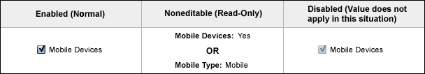
A checkbox is the simplest user interface element for choosing data.
 Use a checkbox only if ALL of the following are true:
Use a checkbox only if ALL of the following are true:
Otherwise, use radio buttons or a drop-down menu to explicitly show all the possible values to the user, and to permit the user to select from amongst all the possible acceptable values.
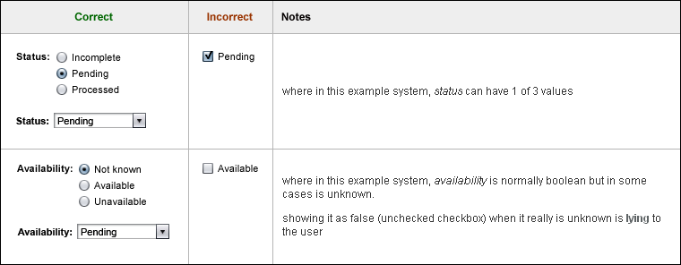
 Place a label to the right of the checkbox.
Place a label to the right of the checkbox.
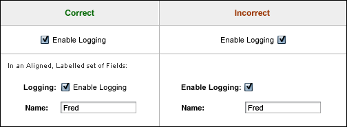
 Display the checkbox label according to the guidelines specified in 7.3.1 Labels.
Display the checkbox label according to the guidelines specified in 7.3.1 Labels.
 Apply headline capitalization to all checkbox labels (see 2.5 Text Capitalization).
Apply headline capitalization to all checkbox labels (see 2.5 Text Capitalization).
 Allow users to select a checkbox by clicking on either the box itself or its label.
Allow users to select a checkbox by clicking on either the box itself or its label.
 Do not use Checkboxes to trigger immediate actions (i.e. submitting the page, hyperlinking, or opening a window) unless the action is solely for purposes of redrawing the same page to facilitate interactivity (i.e. showing additional information) on the same apparent page whose edits remain uncommitted and in-progress (from the user's perspective).
Do not use Checkboxes to trigger immediate actions (i.e. submitting the page, hyperlinking, or opening a window) unless the action is solely for purposes of redrawing the same page to facilitate interactivity (i.e. showing additional information) on the same apparent page whose edits remain uncommitted and in-progress (from the user's perspective).
Instead, use Buttons to trigger immediate actions.
Note that many checkboxes do not trigger actions but set boolean flag variables for an action to be performed later (see 2nd example). These are not triggers of immediate actions at all. This guideline does not apply to such situations.
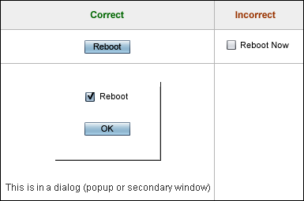
 When checkboxes are used in an aligned, labeled set of fields (i.e. on a Property Page), each checkbox must have BOTH a normal label on the left and a description of the checked state on the right. Exception: if the checkbox is in a set of related options, use a single normal label on the left to label the whole set (top-align the label to the set).
When checkboxes are used in an aligned, labeled set of fields (i.e. on a Property Page), each checkbox must have BOTH a normal label on the left and a description of the checked state on the right. Exception: if the checkbox is in a set of related options, use a single normal label on the left to label the whole set (top-align the label to the set).
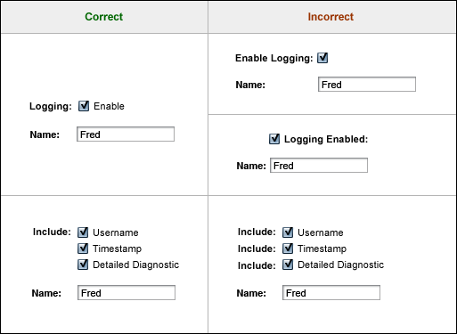
 When checkboxes are used in an aligned, labeled set of fields (i.e. on a Property Page), and when checkboxes are used to indicate enabled, on, active, or similar concepts describing system or object state, then these rules apply:
When checkboxes are used in an aligned, labeled set of fields (i.e. on a Property Page), and when checkboxes are used to indicate enabled, on, active, or similar concepts describing system or object state, then these rules apply:
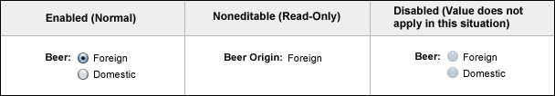
 Use a set of radio buttons if ALL of the following are true:
Use a set of radio buttons if ALL of the following are true:
When these conditions are met, radio buttons are preferable to drop-down menus because all the possible options are always visible.
 If you need to represent <none selected>, add an additional radio button for this purpose. For example, a radio button labeled "Unknown" or "None" could be added.
If you need to represent <none selected>, add an additional radio button for this purpose. For example, a radio button labeled "Unknown" or "None" could be added.
 Place each radio button label to the right of the radio button.
Place each radio button label to the right of the radio button.
 Display the radio button labels according to the guidelines specified in 7.3.1
Labels.
Display the radio button labels according to the guidelines specified in 7.3.1
Labels.
 Apply headline capitalization to all radio button labels (see 2.5
Text Capitalization).
Apply headline capitalization to all radio button labels (see 2.5
Text Capitalization).
 Allow users to select a radio button by clicking on either the button itself or its label.
Allow users to select a radio button by clicking on either the button itself or its label.
 Follow the guidelines
in 6.7 Secondary-Content Page Layout and Use to determine how to position a set of radio buttons on a page with other user interface elements (for example, on a page that allows users to view, edit, and save changes to an object's properties).
Follow the guidelines
in 6.7 Secondary-Content Page Layout and Use to determine how to position a set of radio buttons on a page with other user interface elements (for example, on a page that allows users to view, edit, and save changes to an object's properties).
 When you can clarify the meaning of the radio button set, label the set
on the left and align the label with the topmost radio button. However, never provide a label only to
the left of a radio button or to the left of each radio button in a set. See the example
at the beginning of this section.
When you can clarify the meaning of the radio button set, label the set
on the left and align the label with the topmost radio button. However, never provide a label only to
the left of a radio button or to the left of each radio button in a set. See the example
at the beginning of this section.
 Display the radio buttons using a vertical layout if space is available.
Display the radio buttons using a vertical layout if space is available.
A vertical layout is most commonly used when icons are associated with the radio buttons to help users more easily identify the desired selection. For example:
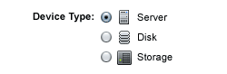
 When vertical space is limited, use a horizontal layout for the radio
buttons.
When vertical space is limited, use a horizontal layout for the radio
buttons.
A horizontal layout is usually less visually clear than a vertical layout, so users have more difficulty scanning the options. If you use a horizontal layout, include sufficient space between the options to avoid confusion about which radio button is associated with which text label. However, keep the options close enough to visually indicate that they form a distinct set of radio buttons.
For example:
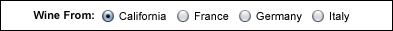
 Also consider laying out radio buttons in columns (with the order of the
options running down the first column, then down the second column, and so on).
Also consider laying out radio buttons in columns (with the order of the
options running down the first column, then down the second column, and so on).
Drop-down menus are also known as:
There are two types of drop-down menus specified in these guidelines: standard menus and jump menus. These menu types exhibit different behavior and have a different appearance. The standard menu is described in this section.
Standard menus are the type of menu used to simply choose a data value. Standard menus are not used to perform actions or allow simple navigation. For this, use a jump menu (see 7.2.3.1 Jump Menus). The selections in standard drop-down menus should usually be nouns, not verbs.
A standard drop-down menu looks like this:
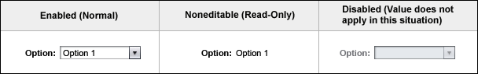
Standard menus exhibit typical menu behavior in that when a user selects an item, the menu closes and the selected item is shown. Note that sometimes when a value is selected, additional information or UI elements may be displayed, or existing elements may be enabled or disabled. This does not mean that a jump menu should be used. A change such as this is considered more of a side-result of choosing a particular value. Only when the selection explicitly performs an action or explicitly navigates to another page or view would a jump menu be used.
 Use a standard drop-down menu if ALL of the following are true:
Use a standard drop-down menu if ALL of the following are true:
 Place a label to the left of all standard drop-down menus, as is done with other entry fields, according to the guidelines specified in 7.3.1 Labels. Do not include the label within the drop-down menu itself.
Place a label to the left of all standard drop-down menus, as is done with other entry fields, according to the guidelines specified in 7.3.1 Labels. Do not include the label within the drop-down menu itself.
This placement differs from the jump menus as described in 7.2.3.1 Jump Menus.
 Apply headline capitalization to the labels of standard menus (see 2.5
Text Capitalization).
Apply headline capitalization to the labels of standard menus (see 2.5
Text Capitalization).
 If the user is not required to make a selection from a standard menu, include a blank option and select it by default if that most accurately reflects the system's current state. The user may choose something
else or may keep the blank option (assuming it is selected). (If you need to be more specific than using blank, insert some text
within parentheses for this option. For example, make "(No Color)" a selectable item in a list of color choices.) Below is an example of of a standard menu with a blank option selected:
If the user is not required to make a selection from a standard menu, include a blank option and select it by default if that most accurately reflects the system's current state. The user may choose something
else or may keep the blank option (assuming it is selected). (If you need to be more specific than using blank, insert some text
within parentheses for this option. For example, make "(No Color)" a selectable item in a list of color choices.) Below is an example of of a standard menu with a blank option selected:
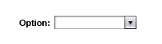
 If the user must make a selection from a standard menu, choose an appropriate default value from the list of options. If there
is no appropriate default value, include (and select by default, if appropriate) a blank option, but make sure there is an asterisk image associated with this field indicating
that it is a required field (see 7.3.2 Editable Text Fields). (Do not display text in parentheses instead of a blank option as this misleadingly suggests a valid value has been chosen.) If the user does not choose a value from the list and then submits the page, provide an error
message indicating that a selection is required (see Chapter 14 Alerts and Messages).
If the user must make a selection from a standard menu, choose an appropriate default value from the list of options. If there
is no appropriate default value, include (and select by default, if appropriate) a blank option, but make sure there is an asterisk image associated with this field indicating
that it is a required field (see 7.3.2 Editable Text Fields). (Do not display text in parentheses instead of a blank option as this misleadingly suggests a valid value has been chosen.) If the user does not choose a value from the list and then submits the page, provide an error
message indicating that a selection is required (see Chapter 14 Alerts and Messages).
For information about grouping the menu items within a standard menu, see 7.2.3.3 Grouping Menu Items.
The information in this section applies to both standard menus (described in the previous section) and jump menus (see 7.2.3.1 Jump Menus).
 Provide users with several ways to select an item in the drop-down menu.
Allow them to:
Provide users with several ways to select an item in the drop-down menu.
Allow them to:
 If all of the items in a menu are temporarily disabled due to system state,
allow the menu to open and display all of the disabled menu items rather than
disabling the entire menu. If all of the menu items are permanently unavailable,
the menu should not be displayed.
If all of the items in a menu are temporarily disabled due to system state,
allow the menu to open and display all of the disabled menu items rather than
disabling the entire menu. If all of the menu items are permanently unavailable,
the menu should not be displayed.
 For items in the drop-down menu (most applicable to standard menus), you can combine two data elements, usually shown as concatenated together with a hyphen.
For items in the drop-down menu (most applicable to standard menus), you can combine two data elements, usually shown as concatenated together with a hyphen.
This strategy is most often used when an option has both a code and a description. For example, a severity drop-down menu might contain these items:
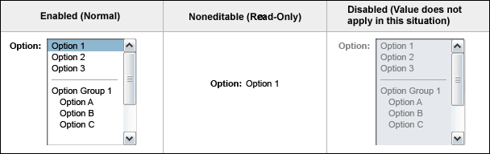
 Display the scrolling list label according to the guidelines specified in 7.3.1
Labels.
Display the scrolling list label according to the guidelines specified in 7.3.1
Labels.
 Align the scrolling list label to the left of the list's top item.
Align the scrolling list label to the left of the list's top item.
 If the user is not required to make a selection from the scrolling list, include a blank option and select it by default if that most accurately reflects the system's current state. The user may choose something else or may keep the blank option (assuming it is selected). (If you need to be
more specific than using blank, insert some text within parentheses for this option. For example, make "(No Color)" a selectable item in a list of color choices.) This guideline
does not apply to editable scrolling lists, the add-and-remove idiom, and orderable lists.
See Chapter 8, Complex Elements for information on these elements.
Below is an example of of a scrolling list with a blank option selected:
If the user is not required to make a selection from the scrolling list, include a blank option and select it by default if that most accurately reflects the system's current state. The user may choose something else or may keep the blank option (assuming it is selected). (If you need to be
more specific than using blank, insert some text within parentheses for this option. For example, make "(No Color)" a selectable item in a list of color choices.) This guideline
does not apply to editable scrolling lists, the add-and-remove idiom, and orderable lists.
See Chapter 8, Complex Elements for information on these elements.
Below is an example of of a scrolling list with a blank option selected:
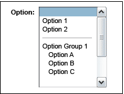
 If the user must make a selection from the scrolling list, choose an appropriate default value from the
list of options. If there is no appropriate default value, start with no selection for the list, but
make sure there is an asterisk image associated with this field indicating that it is a required field
(see 7.3.2 Editable Text Fields). If the user
does not choose one or more of the values from the list and then submits the page, provide an error
message indicating that a selection is required (see Chapter 14 Alerts and Messages).
If the user must make a selection from the scrolling list, choose an appropriate default value from the
list of options. If there is no appropriate default value, start with no selection for the list, but
make sure there is an asterisk image associated with this field indicating that it is a required field
(see 7.3.2 Editable Text Fields). If the user
does not choose one or more of the values from the list and then submits the page, provide an error
message indicating that a selection is required (see Chapter 14 Alerts and Messages).
 If you are grouping items in the scrolling list, follow the guidelines specified
in 7.2.3.3 Grouping Menu Items.
If you are grouping items in the scrolling list, follow the guidelines specified
in 7.2.3.3 Grouping Menu Items.
 Though scrolling lists are not often used for choosing a single value,
use a scrolling list if ALL of the following are true:
Though scrolling lists are not often used for choosing a single value,
use a scrolling list if ALL of the following are true:
Subsequent sections in this chapter provide details about appropriate uses for sets of checkboxes and multiple selection scrolling lists. See 8.1 Editable Scrolling List and 8.2 Add-and-Remove Idiom for details about these, more complex, elements.
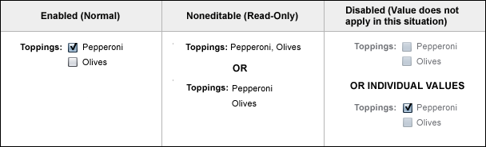
 Use a set of checkboxes if ALL of the following are true:
Use a set of checkboxes if ALL of the following are true:
 Display checkbox labels according to the guidelines specified in 7.2.1.1 Checkbox.
Display checkbox labels according to the guidelines specified in 7.2.1.1 Checkbox.
 When you can clarify the meaning of the set of checkboxes, label the set
on the left and align the label with the topmost checkbox. However, never provide a label only to
the left of a checkbox or to the left of each checkbox in a set.
When you can clarify the meaning of the set of checkboxes, label the set
on the left and align the label with the topmost checkbox. However, never provide a label only to
the left of a checkbox or to the left of each checkbox in a set.
Where appropriate, this label can be plural (such as "Installed Browsers" rather than "Installed Browser").
 Display the checkbox set label according to the guidelines specified in 7.3.1
Labels.
Display the checkbox set label according to the guidelines specified in 7.3.1
Labels.
 Apply headline capitalization to both the checkbox set label and each individual
checkbox label (see 2.5 Text Capitalization).
Apply headline capitalization to both the checkbox set label and each individual
checkbox label (see 2.5 Text Capitalization).
 Consider associating icons with the checkboxes to help users more easily
identify the desired options, similar to the strategy of associating icons with
radio buttons.
Consider associating icons with the checkboxes to help users more easily
identify the desired options, similar to the strategy of associating icons with
radio buttons.
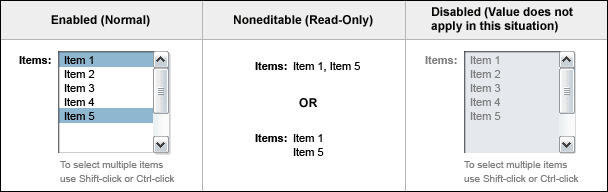
 Use a multiple selection scrolling list if ALL of the following are true:
Use a multiple selection scrolling list if ALL of the following are true:
Multiple selection scrolling lists are also used in the following more complex user interface elements: 8.1 Editable Scrolling List, 8.2 Add-and-Remove Idiom and 8.3 Orderable List.
 Display the label for the multiple selection scrolling list according to the guidelines specified
in 7.3.1 Labels.
Display the label for the multiple selection scrolling list according to the guidelines specified
in 7.3.1 Labels.
 Apply headline capitalization to the label (see 2.5
Text Capitalization).
Apply headline capitalization to the label (see 2.5
Text Capitalization).
 Include text just below the multiple selection scrolling list that tells users
they can select multiple values. Make this text platform-specific so that users
know which keys to press.
Include text just below the multiple selection scrolling list that tells users
they can select multiple values. Make this text platform-specific so that users
know which keys to press.
This text serves to differentiate the multiple selection scrolling list from a single selection scrolling list, to which it would otherwise appear identical.
Make this text smaller than normal. (See information about Field Inline Help in 11.1 Inline Help.) While considering operating system differences, a technical writer can choose the text's final wording.
 Align the multiple selection scrolling list label to the left of the list's top item.
Make the label plural.
Align the multiple selection scrolling list label to the left of the list's top item.
Make the label plural.
 If the user is not required to make a selection from the multiple select scrolling list, include a blank option and select it by default if that most accurately reflects the system's current state. The user may choose one or more other options or may keep the blank option (assuming it is selected). (If you need to be
more specific than using blank, insert some text within parentheses for this option. For example, make "(No Color)" a selectable item in a list of color choices.) If the user selects
this option along with other options and submits the page, display an error message indicating that the blank option
in their selection is in conflict with the other selections (see Chapter 14 Alerts and Messages). The user must choose either the blank option or one or
more of the other options. This guideline does not apply to editable scrolling lists, the add-and-remove idiom, and
orderable lists. See Chapter 8, Complex Elements for information on these elements. Below is an example of of a multiple selection scrolling list with a blank option selected:
If the user is not required to make a selection from the multiple select scrolling list, include a blank option and select it by default if that most accurately reflects the system's current state. The user may choose one or more other options or may keep the blank option (assuming it is selected). (If you need to be
more specific than using blank, insert some text within parentheses for this option. For example, make "(No Color)" a selectable item in a list of color choices.) If the user selects
this option along with other options and submits the page, display an error message indicating that the blank option
in their selection is in conflict with the other selections (see Chapter 14 Alerts and Messages). The user must choose either the blank option or one or
more of the other options. This guideline does not apply to editable scrolling lists, the add-and-remove idiom, and
orderable lists. See Chapter 8, Complex Elements for information on these elements. Below is an example of of a multiple selection scrolling list with a blank option selected:
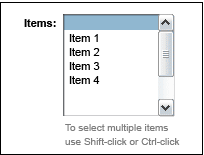
 If the user must make a selection from the multiple select scrolling list, choose an appropriate default
value from the list of options. If there is no appropriate default value, start with no selection for the list.
In either case, make sure there is an asterisk image associated with this field indicating that it is a required field
(see 7.3.2 Editable Text Fields). This is important because users can deselect all
items using this user interface element. If the user does not choose one or more of the values from
the list and then submits the page, provide an error message indicating that a selection is required (see Chapter
14 Alerts and Messages).
If the user must make a selection from the multiple select scrolling list, choose an appropriate default
value from the list of options. If there is no appropriate default value, start with no selection for the list.
In either case, make sure there is an asterisk image associated with this field indicating that it is a required field
(see 7.3.2 Editable Text Fields). This is important because users can deselect all
items using this user interface element. If the user does not choose one or more of the values from
the list and then submits the page, provide an error message indicating that a selection is required (see Chapter
14 Alerts and Messages).
If the user needs to be able to order the items in the scrolling list, see section 8.3 Orderable List.
A number of elements can be used to allow users to perform actions within an application. Actions are commonly available via buttons which are described above in 7.1 Action Buttons. In tables they can be provided via buttons or via links (see 9.4.3.3 Using Embedded Table Actions). In addition, actions can be provided in a type of drop-down menu called a jump menu (see the following section).
Navigation is typically provided by more complex elements such as trees and tabs (see Chapter 5, Top-Level Navigation). In tables they can be provided via links (see 9.2 Embedded Table Navigation). In addition, the jump menu can also be used to allow users to navigate among different views of a given page.
Jump menus, as used to perform actions as well as to navigate among views, are described in the following section.
A related control is the pop-up menu, where menu options are provided in context. Details about the pop-up menu are discussed in 7.2.3.4 Pop-Up Menu.
Drop-down menus are also known as:
There are two types of drop-down menus specified in these guidelines: standard menus and jump menus. These menu types exhibit different behavior and have a different appearance. The jump menu is described in this section.
Jump menus perform some action, such as opening a window, or allow simple navigation to another page or view when the user selects an item in the menu. Jump menus are not used for choosing a data value. For this, use a standard drop-down menu (see 7.2.1.3 Standard Drop-Down Menu).
The distinguishing traits of a jump menu are:
A jump menu used to allow users to perform an action looks like this:

When used for providing actions, a jump menu does not display a label to the left of it. Instead, it has a title with em-dashes (—) around it (for example, — Actions — ) displayed inside the drop-down menu itself. This label is displayed to let users know what kind of items are contained within the drop-down menu, and this label is re-displayed after a valid selection is made, and its associated action is performed. See 7.2.3.2 Jump Menu Behavior for more information on jump menu behavior. Usually, the entries in an action Jump Menu are verbs, not nouns.
See 6.5.3 Content Page Actions Drop-Down Menu and 9.4.3.2 Using a Single Drop-Down Menu for Table Actions for example uses of jump menus for performing actions.
A jump menu used to allow users to navigate looks like this:

When used for navigation, a jump menu does display a label to the left of it, similar to the way a standard menu is displayed (see 7.2.1.3 Standard Drop-Down Menu). Common labels for a jump menu used for navigation are "View:" and "Filter:." Note that filtering (for example, in a table) is considered to be a form of navigation as the user explicitly requests to see a different (filtered) view of the data. The user isn't choosing the action to "Filter" from the jump menu, but choosing which filtered view (for example, which alarm severity) to display. Alarm severities are not actions.
When used for navigation, the selected value is displayed in the menu so that the currently selected view (or filter) is always visible to the user.
See 6.4.1 Using a Drop-Down Menu for Content Area Navigation and 9.5.1.1 Basic Table Filtering for examples of uses of jump menus for navigation.
 Give each jump menu a label, inside of it when used for performing actions, or to the left of it when used for navigation.
Give each jump menu a label, inside of it when used for performing actions, or to the left of it when used for navigation.
 Use a jump menu if ALL of the following are true:
Use a jump menu if ALL of the following are true:
 Display jump menu labels, when they appear to the left of the menu (when used for navigation), according to the guidelines specified in 7.3.1 Labels.
Display jump menu labels, when they appear to the left of the menu (when used for navigation), according to the guidelines specified in 7.3.1 Labels.
 Apply headline capitalization to the labels of jump menus, whether they appear within the menu or to the left of the menu (see 2.5 Text Capitalization).
Apply headline capitalization to the labels of jump menus, whether they appear within the menu or to the left of the menu (see 2.5 Text Capitalization).
Behavior specific to jump menus is described in this section. However, for general drop-down menu behavior, applicable to both jump menus and standard menus, refer to 7.2.1.3.1 General Drop-Down Menu Behavior.
 To reduce the number of user steps and to reduce clutter, jump menus do not use a Go (submit) button to initiate actions. Instead, these menus exhibit behavior in which the action associated with the menu item is performed as soon as the user selects a menu item.
To reduce the number of user steps and to reduce clutter, jump menus do not use a Go (submit) button to initiate actions. Instead, these menus exhibit behavior in which the action associated with the menu item is performed as soon as the user selects a menu item.
In Netscape 7, users can keyboard navigate within jump menus using the arrow keys. In Internet Explorer, users can keyboard navigate by using the Alt key + down arrow to view the menu contents and the arrow keys to navigate through the menu content. In both cases, pressing the Enter key activates the selected menu item.
 Require confirmation from the user through means of an alert message (see Chapter 14 Alerts and Messages) before a destructive or long action is actually performed.
Require confirmation from the user through means of an alert message (see Chapter 14 Alerts and Messages) before a destructive or long action is actually performed.
Confirmation is especially important when a Go button is unavailable because users can inadvertently select an unintended item.
 For jump menus allowing users to perform actions (as opposed to navigation), design the drop-down menu such that after a menu item is selected, the menu snaps back to the first item in the menu (that is, the label) before the action is performed.
For jump menus allowing users to perform actions (as opposed to navigation), design the drop-down menu such that after a menu item is selected, the menu snaps back to the first item in the menu (that is, the label) before the action is performed.
This way, if the user clicks the Back button on the browser, the page loads with the menu label selected in the menu.
 An exception to this snap-back behavior is when a separator is selected from a jump menu used to perform actions. In that case, the separator should remain selected and the page should remain unchanged. Note that because Netscape 7 supports having disabled menu items in which items such as separators are not actually selectable, this situation would never occur. However, older browsers may not support disabled menu items. So, users could inadvertently select this invalid item.
An exception to this snap-back behavior is when a separator is selected from a jump menu used to perform actions. In that case, the separator should remain selected and the page should remain unchanged. Note that because Netscape 7 supports having disabled menu items in which items such as separators are not actually selectable, this situation would never occur. However, older browsers may not support disabled menu items. So, users could inadvertently select this invalid item.
 For jump menus used to allow users to navigate, the menu remains on the value the user last selected, and does not snap back. This way, users can see
For jump menus used to allow users to navigate, the menu remains on the value the user last selected, and does not snap back. This way, users can see the location to which they have chosen to navigate.
It would be rare to have a separator in a navigation jump menu, but if a separator is selected in a navigation jump menu, display the separator, and leave the page unchanged. Users are more likely to realize that they have inadvertently selected an invalid item if the page does not change, and the separator is displayed as the selected item. Note that this is applicable only on older browsers that don't support disabled, and therefore unselectable, menu items.
The following diagram shows jump menu behavior for a menu used for performing actions:
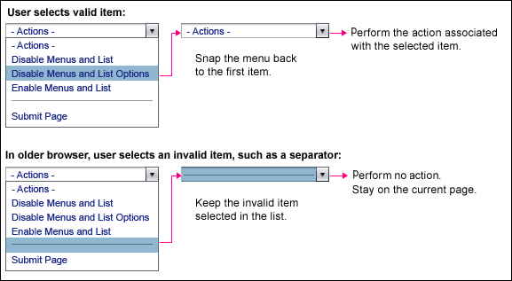
To help users quickly locate and understand items contained in drop-down menus, consider grouping logically-related items. This is typically used in jump menus. The two methods for accomplishing this goal are standard grouping and optgroup grouping.
In standard grouping, use separator lines to group items. Indicate each separator line by a disabled and unselectable menu item containing a series of em-dashes ("—" or "—" as in "—————"). This method is similar to the menu grouping method commonly used for pull-down menus in nonbrowser-based applications. The series of em-dashes should be as long as the longest item in the menu. Note that some older browsers may not support disabling menu items. In this case, follow the guidelines in 7.2.3.2 Jump Menu Behavior for guidelines about what to do if a user selects a separator line.
In contrast, optgroup grouping relies on an HTML tag called optgroup, which gives grouped items an unselectable label. This label appears above the grouped items, and all of the items contained in the group appear indented below. Note that the optgroup tag is not supported on older browsers such as Internet Explorer 5.5. These browsers degrade gracefully by simply not showing the optgroup label and not indenting any of the menu items.
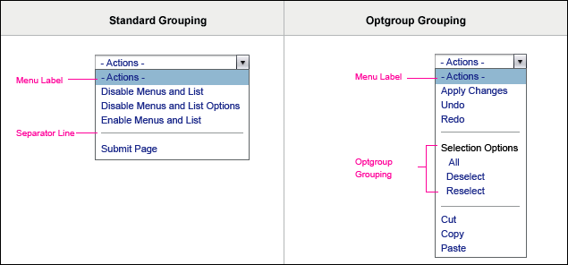 Place separators before optgroups so that older browsers, which do not show the optgroup labels, still appear to group items using the standard grouping. The exception: when the optgroup appears at the beginning of the menu, omit the separator.
Place separators before optgroups so that older browsers, which do not show the optgroup labels, still appear to group items using the standard grouping. The exception: when the optgroup appears at the beginning of the menu, omit the separator.
 Group items that are logically related. Do not group items based solely on frequency of use.
Group items that are logically related. Do not group items based solely on frequency of use.
 If the relationships among items in the menu groups are relatively clear, then use standard grouping. If the relationships among items are not clear, then consider using optgroup grouping.
If the relationships among items in the menu groups are relatively clear, then use standard grouping. If the relationships among items are not clear, then consider using optgroup grouping.
For example, say a menu contains a list of storage devices and the items in the menu are the names of the devices. In this case, grouping the storage devices by model might be useful. It's unlikely that the names of the devices themselves convey the device model. Therefore, it is unlikely that, if standard grouping were used, users would realize how the items are grouped. However, optgroup grouping could be used to clarify the grouping scheme so that users can more easily understand the contents of the menu and more easily locate items.
On the other hand, if a menu contained a list of actions to be performed on storage devices and the actions were grouped into administrative actions and configuration actions, optgroup labels would be superfluous, merely adding visual clutter to the menu.
 When using the optgroup method, use a concise, descriptive noun for the grouping label. Also, create parallel, consistent labels.
When using the optgroup method, use a concise, descriptive noun for the grouping label. Also, create parallel, consistent labels.
 When using the optgroup method, avoid creating single-item optgroups.
When using the optgroup method, avoid creating single-item optgroups.
 Likewise, a menu should not contain only a single optgroup. In this case, the label for the group should be reflected in the menu's label.
Likewise, a menu should not contain only a single optgroup. In this case, the label for the group should be reflected in the menu's label.
 Strive to use the standard and optgroup grouping methods consistently within your application. Do not arbitrarily use both types across menus.
Strive to use the standard and optgroup grouping methods consistently within your application. Do not arbitrarily use both types across menus.

 Because a pop-up menu is provided within the context of another user interface element, do not display a separate label for the menu, either outside of it or within it.
Because a pop-up menu is provided within the context of another user interface element, do not display a separate label for the menu, either outside of it or within it.
When a pop-up menu is invoked it is displayed over the contents of the page from which it is invoked. The menu is not transparent, so the page contents beneath the pop-up menu are not visible when the menu is displayed.
 Because some of the page contents will be hidden by the pop-up menu, it should only be as large as it needs to be. Keep the wording of the menu items as brief as possible while still being clear.
Because some of the page contents will be hidden by the pop-up menu, it should only be as large as it needs to be. Keep the wording of the menu items as brief as possible while still being clear.
 Display the pop-up menu with a dropshadow on the bottom and right to make it appear as if it is floating above the page.
Display the pop-up menu with a dropshadow on the bottom and right to make it appear as if it is floating above the page.
 As in jump menus, pop-up menu items are displayed as links and take effect immediately when clicked. See 2.1 Color Palette for information about Sun's web application color palette.
As in jump menus, pop-up menu items are displayed as links and take effect immediately when clicked. See 2.1 Color Palette for information about Sun's web application color palette.
 Apply grouping mechanisms, as appropriate, to help users locate the desired menu item. See 7.2.3.3 Grouping Menu Items for more information.
Apply grouping mechanisms, as appropriate, to help users locate the desired menu item. See 7.2.3.3 Grouping Menu Items for more information.
 Automatically close a pop-up menu once a menu item link is clicked or if the user clicks outside of the menu.
Automatically close a pop-up menu once a menu item link is clicked or if the user clicks outside of the menu.
The default position for a pop-up menu is with the top left edge of the pop-up menu opening right under the bottom left edge of the control which invoked it. However, there might be cases where the menu will need to be adjusted horizontally when the menu would not be visible on the screen when it is placed in the default location. In this situation, move the pop-up menu to the left, with the top right edge of the pop-up menu placed just below the bottom right edge of the control invoking it.
Similar space issues may arise vertically when the menu would not be visible on the page if placed below the invoking control. In this situation, position the pop-up menu above the invoking control.
Also, in some circumstances it is just more appropriate to position the pop-up menu in a location other than the default position. This may be dependent on the location of the control that invokes the pop-up menu. For example, in the accordion control (see 5.1.2.1 Accordion), it makes sense to position the pop-up menu such that its right edge aligns with the right edge of the invoking control.
 If possible, position the pop-up menu in the default location (below and left-aligned with the invoking control). However, adjust horizontally and/or vertically, as described above, if the pop-up menu would not be completely visible, would cover information that should be visible while the user is viewing the menu, or if it is otherwise more appropriate to position it in a non-default location.
If possible, position the pop-up menu in the default location (below and left-aligned with the invoking control). However, adjust horizontally and/or vertically, as described above, if the pop-up menu would not be completely visible, would cover information that should be visible while the user is viewing the menu, or if it is otherwise more appropriate to position it in a non-default location.
Below is an example of a pop-up menu that has been moved to the left, aligning its right edge with the right edge of the control that invoked it.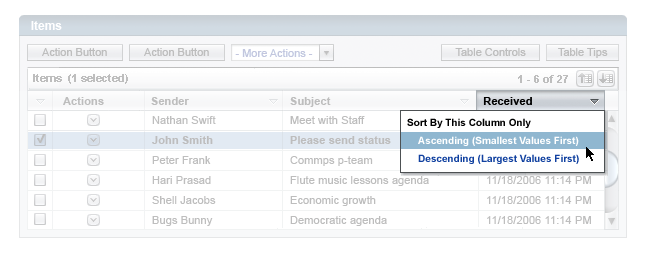
Text elements allow users to view and edit text in applications. The several
types of text elements include:
The following example shows a page with an example of each type of text element:
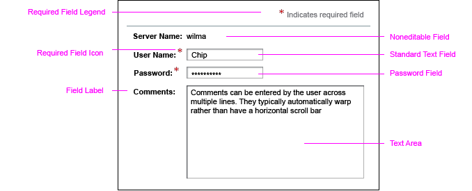
 Use text labels to identify controls and data values. Labels should be left-aligned
and appear to be associated with the item being labeled.
Use text labels to identify controls and data values. Labels should be left-aligned
and appear to be associated with the item being labeled.
 Use
headline capitalization on all labels (see 2.5
Text Capitalization).
Use
headline capitalization on all labels (see 2.5
Text Capitalization).
 If a field requires that units-of-measure be specified, place this information to the right of the field itself (not as part of the field's label). Do not place this information within parentheses. Use headline capitalization (see 2.5 Text Capitalization) for units-of-measure information.
If a field requires that units-of-measure be specified, place this information to the right of the field itself (not as part of the field's label). Do not place this information within parentheses. Use headline capitalization (see 2.5 Text Capitalization) for units-of-measure information.
 For accessibility reasons, enclose the field and units-of-measure information in a span or div tag to tie them together.
For accessibility reasons, enclose the field and units-of-measure information in a span or div tag to tie them together.
Form elements are often organized hierarchically into groups and subgroups.
The labels on the individual elements as well as on the groups are designed
to visually support this hierarchy. In this scheme, groups have bolder, heavier
labels whereas individual elements within the groups have lighter labels. In
the following example, Level 1 labels have a heavier appearance than Level 2
labels, which, in turn have a heavier appearance than Level 3 labels.
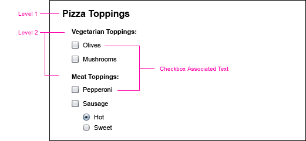
 Level 1 labels are visually much heavier than the text appearance for field labels as specified
in these guidelines. Therefore, use them sparingly. In these guidelines, use
of Level 1 labels is reserved for elements such as section headings.
Level 1 labels are visually much heavier than the text appearance for field labels as specified
in these guidelines. Therefore, use them sparingly. In these guidelines, use
of Level 1 labels is reserved for elements such as section headings.
 Level 2 labels are the labels to use by default. They are used for most field labels. These labels appear left-aligned
with each other and to the left of the element or elements they are labeling.
Level 2 labels are the labels to use by default. They are used for most field labels. These labels appear left-aligned
with each other and to the left of the element or elements they are labeling.
 Use Level 3 labels for items appearing within a group that is labeled with a
Level 2 label. These labels should be left-aligned with each other and generally,
though not always, appear to the right of the element that they are labeling (for example, checkbox and radio button labels).
If an item with a Level 3 label contains a group of items (as in the preceding
example), then the items within the group should also have a Level 3 label.
Use Level 3 labels for items appearing within a group that is labeled with a
Level 2 label. These labels should be left-aligned with each other and generally,
though not always, appear to the right of the element that they are labeling (for example, checkbox and radio button labels).
If an item with a Level 3 label contains a group of items (as in the preceding
example), then the items within the group should also have a Level 3 label.
When a mix of checkboxes, radio buttons and other form elements appear in a group, as shown in the following example, each item at the top level (that is, not items that are in subgroups) should have a Level 2 label to its left. In the Incorrect example on the right, the checkbox labeled "Automatically Mount Home Directory" is logically at the same level as the other items (Path, Server and Permissions). Therefore, the checkbox arguably could appear left-aligned with the labels for these items with the Level 2 label. However, this arrangement diminishes readability and makes it more difficult for the user to understand the relationships among the items.
 The method for handling these mixed-element situations, shown in the Correct example on the left, is to give each item a Level 2 label on the left and to align the radio
button or checkbox (and its right-hand label) with the other form elements in
the group. It can be awkward to have an item with two labels if the labels are
essentially identical. So, one approach to writing the labels is to use a short
descriptive noun as the Level 2 label on the left and a more descriptive phrase
for the Level 3 label on the right.
The method for handling these mixed-element situations, shown in the Correct example on the left, is to give each item a Level 2 label on the left and to align the radio
button or checkbox (and its right-hand label) with the other form elements in
the group. It can be awkward to have an item with two labels if the labels are
essentially identical. So, one approach to writing the labels is to use a short
descriptive noun as the Level 2 label on the left and a more descriptive phrase
for the Level 3 label on the right.
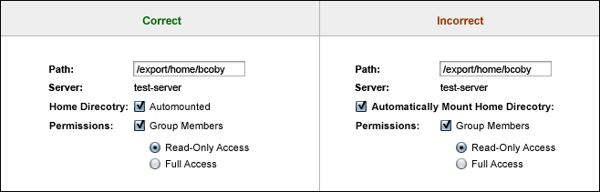
 When displaying a set of checkboxes in its noneditable (read-only) appearance (see 7.2.2.1 Set of Checkboxes), use a level 2 label for the label of the set, as is done when labeling a set of enabled or disabled form elements. Use label level 2 to identify each individual checkbox in its noneditable (read-only) appearance as well, but indent these labels by 10 pixels with respect to the label for the entire set.
When displaying a set of checkboxes in its noneditable (read-only) appearance (see 7.2.2.1 Set of Checkboxes), use a level 2 label for the label of the set, as is done when labeling a set of enabled or disabled form elements. Use label level 2 to identify each individual checkbox in its noneditable (read-only) appearance as well, but indent these labels by 10 pixels with respect to the label for the entire set.
For example, in the following image showing different appearances for a set of checkboxes, the noneditable (read-only) appearance for the set of checkboxes shows the label for the whole set, "Options:" using label level 2. The labels "Connect on Carrier:" and "Bidirectional:" also use label level 2, but are indented 10 pixels to the right.
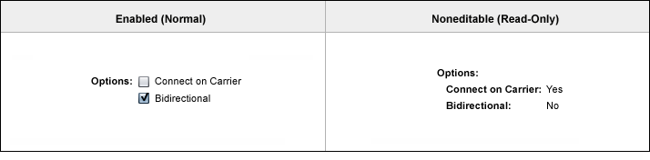
 Labels for individual elements should use the HTML <label> tag to associate
the labels with form elements. Aside from being an accessibility requirement,
use of this tag also enables users to click on the label text in order to activate
or put focus on the form element. Without the HTML <label> tag, users have
to click on the element itself.
See Appendix D, Accessibility Requirements for more information on the HTML <label> tag.
Labels for individual elements should use the HTML <label> tag to associate
the labels with form elements. Aside from being an accessibility requirement,
use of this tag also enables users to click on the label text in order to activate
or put focus on the form element. Without the HTML <label> tag, users have
to click on the element itself.
See Appendix D, Accessibility Requirements for more information on the HTML <label> tag.
 Labels for groups of elements should use the HTML <fieldset> and HTML <legend>
tags to identify the elements as a group to assistive technologies. See Appendix
D, Accessibility Requirements for more information on use of the HTML <fieldset>
tag. Note that, by default, the HTML <fieldset> tag places a rectangle around
the group of items. This rectangle can and should be suppressed using CSS styles.
Labels for groups of elements should use the HTML <fieldset> and HTML <legend>
tags to identify the elements as a group to assistive technologies. See Appendix
D, Accessibility Requirements for more information on use of the HTML <fieldset>
tag. Note that, by default, the HTML <fieldset> tag places a rectangle around
the group of items. This rectangle can and should be suppressed using CSS styles.
Text fields display a single line of editable text.
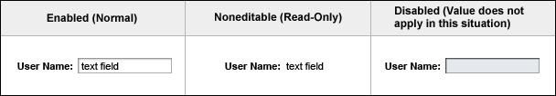
 Use fixed fonts for text field contents only in rare situations when it is necessary to render a
text field where the length of the data can be no longer than what is allowed by the size of the
field.
Use fixed fonts for text field contents only in rare situations when it is necessary to render a
text field where the length of the data can be no longer than what is allowed by the size of the
field.
For example, this might be necessary if the user needs to see the exact length of the value relative to other text field values on the page (where all the text fields would be lined up). Another situation might be when users must see all of the characters in the text field even if they type a lot of wide characters such as capital Ws. These situations tend to be rare, however.
 Appropriately size the visible width of a text field to accommodate the length of the intended text strings. This is particularly important for fields intended to hold potentially lengthy data such as file paths.
Appropriately size the visible width of a text field to accommodate the length of the intended text strings. This is particularly important for fields intended to hold potentially lengthy data such as file paths.
 If the text field can accept long entries (for example, 60 characters or more), but making the text field's visible width accommodate the whole entry creates page layout and alignment concerns,
consider using a text area (see 7.3.4 Text Areas) with a
height large enough to accommodate a horizontal scrollbar. The width can be sized for visual design aesthetics within the page, but should generally be made as large as possible.
If the text field can accept long entries (for example, 60 characters or more), but making the text field's visible width accommodate the whole entry creates page layout and alignment concerns,
consider using a text area (see 7.3.4 Text Areas) with a
height large enough to accommodate a horizontal scrollbar. The width can be sized for visual design aesthetics within the page, but should generally be made as large as possible.
 Avoid setting the text field to a shorter visible width and letting the leftmost characters then scroll out of the text box, as needed, when new characters are typed. When doing so there is no indication that any text is out of view, and when manually scrolling, there are no scrollbars to provide information about how much data there is and which part of it is currently in view.
Avoid setting the text field to a shorter visible width and letting the leftmost characters then scroll out of the text box, as needed, when new characters are typed. When doing so there is no indication that any text is out of view, and when manually scrolling, there are no scrollbars to provide information about how much data there is and which part of it is currently in view.
 To denote required fields, place the graphic named Required Field,
To denote required fields, place the graphic named Required Field,  , to
the right of the field's label and set its tool tip to "Required Field". Then, include the legend: "
, to
the right of the field's label and set its tool tip to "Required Field". Then, include the legend: " Indicates
required field" at the top right
of the content area, as shown in the previous example at the beginning of 7.3
Text Elements. Do this for all required fields, even if all fields on the page are required.
Indicates
required field" at the top right
of the content area, as shown in the previous example at the beginning of 7.3
Text Elements. Do this for all required fields, even if all fields on the page are required.
 If an extremely large number of possible values exist for a given field (for example, thousands of possible values),
the best option might simply be to provide an editable text field for users to type in
a value. Other user interface elements (for example, drop-down menus, scrolling lists,
sets of checkboxes or radio buttons, add-and-remove idioms) are not designed to handle extremely large numbers of possible
values.
If an extremely large number of possible values exist for a given field (for example, thousands of possible values),
the best option might simply be to provide an editable text field for users to type in
a value. Other user interface elements (for example, drop-down menus, scrolling lists,
sets of checkboxes or radio buttons, add-and-remove idioms) are not designed to handle extremely large numbers of possible
values.
However, if appropriate, the text field can be linked to a pop-up window of values where users can search for a value that they do not remember (not shown in preceding picture). The details of this pop-up search window entry field have not yet been determined.
Password fields are editable text fields that display an asterisk ("*") in place of every character typed by the user. The password field serves to mask what the user types.
A text area is a rectangular space where users can type multiple lines of text.
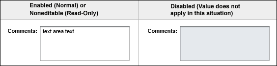
 Display the text in the text area in a single font size and font type.
Read only text areas appear just as editable text areas do. The text is just not editable.
Display the text in the text area in a single font size and font type.
Read only text areas appear just as editable text areas do. The text is just not editable.
 Wrap the text, when advisable to do so. For example, wrap text when descriptive information is held
in a text area. This activates the text area's vertical scrollbar if the text exceeds the height of
the text area.
Wrap the text, when advisable to do so. For example, wrap text when descriptive information is held
in a text area. This activates the text area's vertical scrollbar if the text exceeds the height of
the text area.
 When text wrapping is not advisable, such as when the user types code or a path name that must appear
on one line, turn off wrapping.
When text wrapping is not advisable, such as when the user types code or a path name that must appear
on one line, turn off wrapping.
| [ Table of Contents | 0 Revision History | 1 Introduction | 2 Visual Design | 3 Windows and Pages | 4 Mastheads | 5 Top-Level Navigation | 6 Content Area | 7 Simple Elements | 8 Complex Elements | 9 Tables | 10 Topology | 11 Contextual Help | 12 Search | 13 Wizards | 14 Alerts and Messages | 15 Progress Indicators | 16 Alarms and Status Indicators | 17 Login Page | 18 Version Page | Appendices ] |
| Privacy Policy | Terms of Use | Trademarks | Copyright 2007 Sun Microsystems, Inc. |